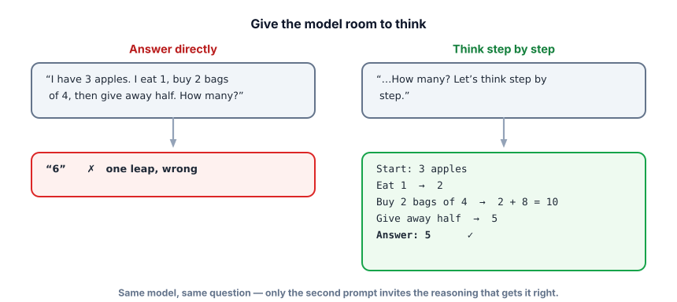
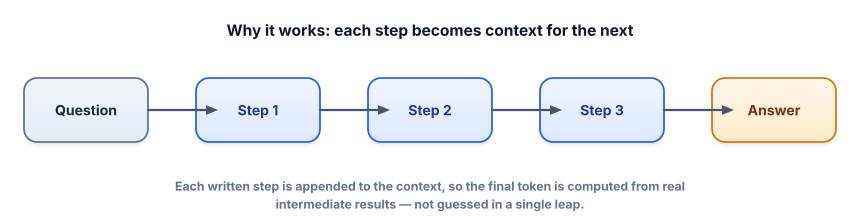

Chain-of-thought & reasoning
Chain-of-thought (CoT) means asking the model to write its steps before the final answer.
The model writes one token at a time. Each token can only build on what is already written.
If it must answer at once, there is nowhere for the working to happen.
When it writes the steps first, every step becomes input that the answer can use.
It helps most on multi-step problems: maths, logic and planning.
Chain-of-thought is the maths teacher saying 'show your working'. Writing each step on paper means you can use the result of step 2 when you do step 3, instead of trying to hold everything in your head and blurting a final number. The paper is the model's context.
| In the picture | In the real system |
|---|---|
| The maths teacher saying “show your working” | A prompt line such as “Think step by step” |
| The paper you write on | The context window: the written steps become input |
| Using step 2's result in step 3 | Each new token is conditioned on all earlier tokens |
| Shouting the answer before working it out | Asking for “just the number” on a multi-step problem |
Where the picture breaks. A student's written working is usually how they really solved it, while a model's written steps are not guaranteed to be the real reason it gave its answer.
Going deeper
For anything multi-step — math, logic, planning, careful analysis — one tweak reliably boosts accuracy: ask the model to reason before it answers. It’s simple, it’s backed by how the engine works, and it’s a staple of real prompts.
Why blurting fails
Recall from Track 1 that the model generates one token at a time, each conditioned on everything so far. If you demand the final answer immediately, the model must commit to an answer token having done no intermediate work — there’s nowhere for the “calculation” to happen. For a one-step lookup that’s fine. For a multi-step problem, it’s like being forced to shout the answer to a word problem before working it out: you’ll often be wrong. Letting the model write the steps first gives those intermediate results a place to live — the context — which the final answer can then build on.
Chain-of-thought (CoT) prompting asks the model to produce its intermediate reasoning steps before the final answer. The simplest form is zero-shot CoT: just add “Let’s think step by step.” The stronger form is few-shot CoT: show a couple of examples that include worked reasoning, so the model imitates that reasoning style on the new problem.

The reason this works follows directly from autoregression: each reasoning step you let the model write becomes part of the context for the next token, so the final answer is computed from real intermediate results instead of produced in a single risky leap.

Feel it on a trick question
Here’s a problem engineered to trip up fast thinking (humans fail it too). Try “answer fast,” then “reason it out.”
Reason vs. blurt
A bat and a ball cost $1.10 together. The bat costs $1.00 more than the ball. How much is the ball?
In production you often want the reasoning to happen but only use the final answer. The pattern: ask it to reason, then put the answer on a predictable last line you can parse. (Uses the ask() helper from 2.1.)
q = "A shirt is $40. It is 25% off, then 8% sales tax is added. What is the final price?"
# Direct: the model may slip on the multi-step arithmetic
print(ask(q + " Answer with just the number."))
# Chain-of-thought, with a parseable final line
prompt = q + """
Think step by step. Then, on the last line, write exactly:
Final: <number>"""
out = ask(prompt)
print(out) # full reasoning, for your eyes/logs
final = out.strip().splitlines()[-1] # grab just "Final: 32.40"
print("parsed →", final)$40 × 0.75 = $30, then × 1.08 = $32.40. The reasoning makes the model far more likely to get there, and the “Final:” convention lets your code use the answer without the prose. This “reason in a scratchpad, then emit a clean answer” pattern is everywhere in production.
Assume an e-commerce firm checks 80,000 refund claims a day against multi-condition rules. Prices: Claude Sonnet 5.5, $10 per million output tokens (Anthropic models overview). Accuracy figures are assumptions you would measure on a labelled set.
- Direct answer. About 5 output tokens per claim: 80,000 x 5 = 400,000 tokens = $4/day. Suppose a 500-claim eval shows 82% correct.
- Chain-of-thought. About 250 output tokens per claim: 80,000 x 250 = 20M tokens = $200/day. Suppose the eval shows 94% correct.
- Count the errors. Direct: 80,000 x 18% = 14,400 wrong decisions a day. CoT: 80,000 x 6% = 4,800. That is 9,600 fewer mistakes for $196 more, about 2 cents per avoided error. If a wrong refund decision costs even $1 in agent time or leakage, CoT wins easily.
- Latency. At an assumed 60 tokens/second, 250 tokens is about 4 seconds versus near-instant. Fine for a back-office queue, maybe not for a live checkout.
- Self-consistency. Sampling 5 chains and voting costs 5 x $200 = $1,000/day. Run it only on claims where the first chain's answer is near a rule boundary, say 10% of traffic, for about $100/day extra.
- Do the arithmetic in code. Dates and amounts are computable. Let the model extract fields and pick which rule applies, and let Python do the date maths. That removes a whole class of reasoning slips for free.
The steps the model writes are still generated text, not a verified proof. A chain can look perfectly logical and still reach a wrong answer, and the stated reasoning isn’t guaranteed to be the “real” reason for the output. CoT improves accuracy on average; it doesn’t make the model correct or honest by construction. For anything high-stakes, verify the result (tools, a checker, or self-consistency below) rather than trusting the narration.
Some newer models are trained to do this step-by-step reasoning internally and may hide it, exposing only the final answer. That’s great, but it doesn’t make this lesson obsolete: you’ll still write CoT-style prompts for many models, you’ll often want the explicit steps so you can inspect or verify them, and the underlying idea — give multi-step problems room to be worked — is exactly what those models were trained to do. Understanding it is what lets you use either kind well.
- Chain-of-thought = make the model reason step by step before answering; it boosts accuracy on multi-step tasks.
- It works because each step becomes context the final answer can build on (autoregression).
- Zero-shot CoT = “Let’s think step by step”; few-shot CoT = show examples that include reasoning.
- Use the “reason, then put the answer on a parseable last line” pattern to keep clean outputs.
- Reasoning is still generated text — verify high-stakes answers; and skip CoT for simple lookups where it just adds cost/latency.
For which task is chain-of-thought most worth the extra tokens and latency?
When is chain-of-thought most worth the extra tokens?
You use self-consistency with 5 sampled chains but set temperature to 0 on a local model. Accuracy does not improve at all. Why?
1. Rewrite this prompt to use CoT with a parseable answer: “What’s 15% tip on a $76 bill split between 4 people?”
2. Your high-volume sentiment classifier runs CoT on every tweet and is now slow and expensive. What do you change, and what’s the trade-off?
3. A model’s chain-of-thought is impeccable but the final number is wrong. What does this reveal, and what’s your move?
▸ Show solutions & reasoning
1. “Compute the 15% tip on $76 and split it among 4 people. Think step by step, then on the last line write: Final: $<amount per person>.” The steps (76 × 0.15 = 11.40; 11.40 ÷ 4 = 2.85) make the arithmetic reliable, and the Final: line lets your code extract $2.85 cleanly.
2. Drop CoT for this task — sentiment is a single-step judgment, so few-shot (Lesson 2.2) gives reliable labels without the reasoning overhead. Trade-off: you lose the model’s “explanation,” but for a simple, high-volume classification that explanation wasn’t earning its cost. Match technique to task complexity.
3. It reveals that the reasoning is generated narration, not a guaranteed-correct computation — a plausible chain can still land on a wrong answer (and the “reason” shown isn’t necessarily the true cause). Your move: don’t trust the prose; verify. Route the actual arithmetic to a tool/calculator (Track 4), or use self-consistency (sample several chains and take the majority answer). Reliability comes from verification, not from a confident-looking explanation.
One powerful upgrade is self-consistency: instead of taking a single chain of thought, sample several (with temperature > 0 so they differ), then take the majority final answer. The intuition is that there are many wrong paths but they disagree with each other, while correct reasoning tends to converge — so voting across chains filters out one-off slips. It costs more (you run the model several times) but meaningfully boosts accuracy on hard reasoning, and it’s a great pattern when correctness matters more than latency.
The deeper lesson is about faithfulness. Research has shown a model’s stated reasoning doesn’t always reflect what actually drove its answer — it can rationalize. So treat CoT as two separate wins that usually but don’t always coincide: (1) it genuinely improves answers by giving the computation room to happen, and (2) it gives you a human-readable trace to inspect. Lean on (1) for accuracy, use (2) for debugging — but when stakes are high, close the loop with real verification: tools for anything computable, a second model or rules to check claims (Tracks 6–7), and self-consistency for judgment calls. That’s how you turn “sounds right” into “is right.”
labs/12_self_consistency.pyFree and offline once set up: Ollama with qwen2.5:7b, plus the packages in labs/README.md. From the course folder:
python labs/12_self_consistency.pyWhat to look for: The lab samples 7 reasoning chains per problem from qwen2.5:7b on 5 word problems and majority-votes the first N. On our run accuracy was 4 of 5 at every N while tokens grew linearly, and on the clock-arithmetic problem the most common answer was wrong. With n=5 problems that is a demo of the mechanism, not an accuracy curve. Read the individual answers for that problem: neat-looking steps that reach a wrong number are the faithfulness warning from this lesson.
Small samples: these labs use 5 to 20 cases so they run in minutes on a laptop. Where they report a rate, they print n and a 95% Wilson interval. Read them as a demonstration of the mechanism, not as a measured rate for your system; for that you need hundreds of cases and several seeds.
▸ Recorded output (our run, 2026-11-03, qwen2.5:7b on a laptop GPU)
P2 gold=215 answers=[265.0, None, 215.0, 195.0, 195.0, 215.0, 195.0]
P3 gold=17 answers=[17.0, 17.0, 17.0, 17.0, 17.0, 17.0, 17.0]
P4 gold=540 answers=[540.0, 5.0, 540.0, 540.0, 540.0, 540.0, 540.0]
P5 gold=676.5 answers=[676.5, 676.5, 676.5, 676.5, 676.5, 676.5, 676.5]
2) Accuracy vs number of samples (majority vote over the first N)
N=1: accuracy 4/5 = 80% (95% CI 38%-96%) ~196 output tokens per problem
N=3: accuracy 4/5 = 80% (95% CI 38%-96%) ~588 output tokens per problem
N=5: accuracy 4/5 = 80% (95% CI 38%-96%) ~980 output tokens per problem
N=7: accuracy 4/5 = 80% (95% CI 38%-96%) ~1,373 output tokens per problem
With n=5 problems these intervals are far too wide to compare N values: treat this as a demo of the
mechanism (and of a vote going wrong), not a measured accuracy curve. Real curves need hundreds of problems.
Look: more samples cost tokens linearly; accuracy gains are bumpy and flatten out. A vote only helps
when the model is right more often than any single wrong answer. Measure the curve on YOUR task before
paying for N=7 (or for a reasoning model's long thinking) in production.Your numbers will differ a little run to run. Full log: labs/outputs. Source: labs/12_self_consistency.py.
Warm-up. Write a CoT prompt for: 'A train leaves at 14:40 and the trip takes 2 h 35 min. When does it arrive?' with a parseable last line, and give the correct answer.
▸ Solution
'Work out the arrival time step by step. On the last line write exactly: Final: HH:MM.' Steps: 14:40 + 2 h = 16:40; 16:40 + 35 min = 17:15. Final: 17:15.
Transfer. A support bot uses CoT and sometimes shows its reasoning to customers, including lines like 'the customer is probably lying'. How do you keep the accuracy benefit without that risk?
▸ Solution
Separate reasoning from the reply. Ask for reasoning inside a tag or field your code strips, and only show the final answer field, or use a model or API that keeps reasoning internal. Add an output check that blocks reasoning text from reaching the user. Also tell the model to phrase reasoning neutrally, since logs are read by staff too.
Stretch. Turpin et al. (2023) showed CoT explanations can leave out the real cause of an answer, for example a bias planted in the few-shot examples. Design a small experiment to check whether your model's CoT is faithful on your task.
▸ Solution
Take 100 cases. Create a biased variant of the prompt, for example every few-shot example's answer is option A. Run both prompts. If answers shift towards A in the biased version, read the explanations: if they rarely mention the examples' pattern as a reason, the CoT is not reporting what drove the answer. Report the shift rate and the share of explanations that mention the bias. The conclusion for production is to verify answers with checks rather than trusting explanations.
Junior What is chain-of-thought prompting and why does it help?
▸ Model answer
It asks the model to write out intermediate reasoning steps before the final answer, either with a phrase like 'think step by step' or with examples that include worked steps. It helps because the model generates token by token: written steps become context, so the final answer can build on actual intermediate results instead of being guessed in one jump. It helps most on multi-step maths, logic and rule-checking, and adds little on simple lookups.
Mid When would you not use chain-of-thought?
▸ Model answer
On simple single-step tasks like language detection, sentiment or field extraction, where it adds tokens and latency without improving accuracy. In tight latency budgets such as autocomplete. When the reasoning might leak to users and you cannot separate it. And with reasoning models that already think internally, where adding 'think step by step' is usually redundant. In every case, check on an eval rather than assuming.
Senior How do you make a multi-step LLM decision trustworthy in production?
▸ Model answer
Split it: the model extracts facts and picks rules, deterministic code computes anything computable. Use structured output for the decision and evidence fields. Where judgment is needed, sample several chains and vote, or have a second model check against the rules. Gate releases on an eval with labelled edge cases, and log each decision with its evidence for audit. Do not treat the chain-of-thought text as proof; it may not reflect the real cause of the answer. Send low-confidence or high-value cases to a human.
- Chain-of-Thought Prompting Elicits Reasoning in Large Language Models (Wei et al., 2022) — arXiv
- Large Language Models are Zero-Shot Reasoners (Kojima et al., 2022) — arXiv
- Self-Consistency Improves Chain of Thought Reasoning (Wang et al., 2022) — arXiv
- Language Models Don't Always Say What They Think (Turpin et al., 2023) — arXiv
You can now shape the output and strengthen the reasoning. Next, we make outputs that software can actually consume: reliable structured output and JSON.
In one line: Let the model write its working first, because each written step is something the answer can lean on.